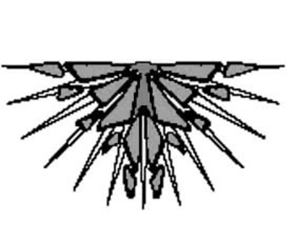
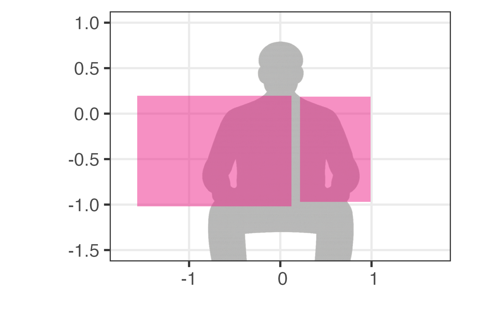
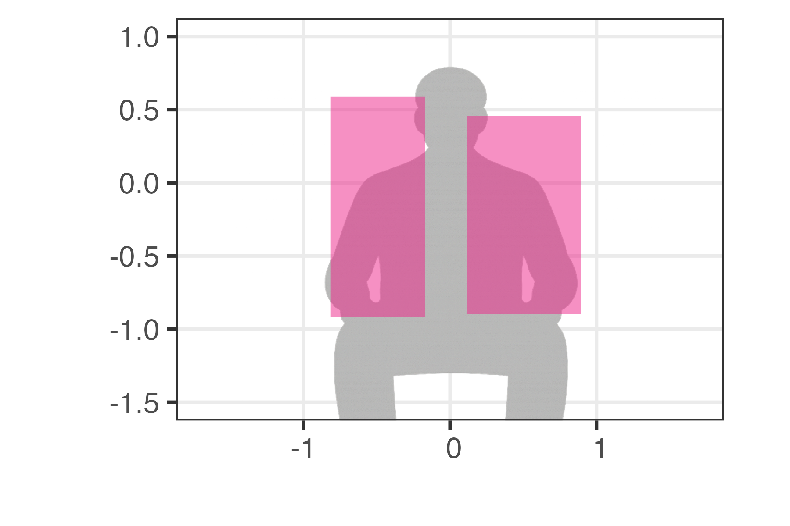
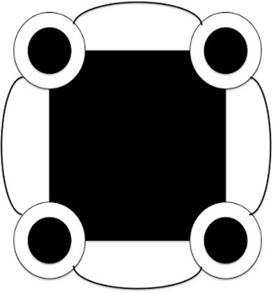
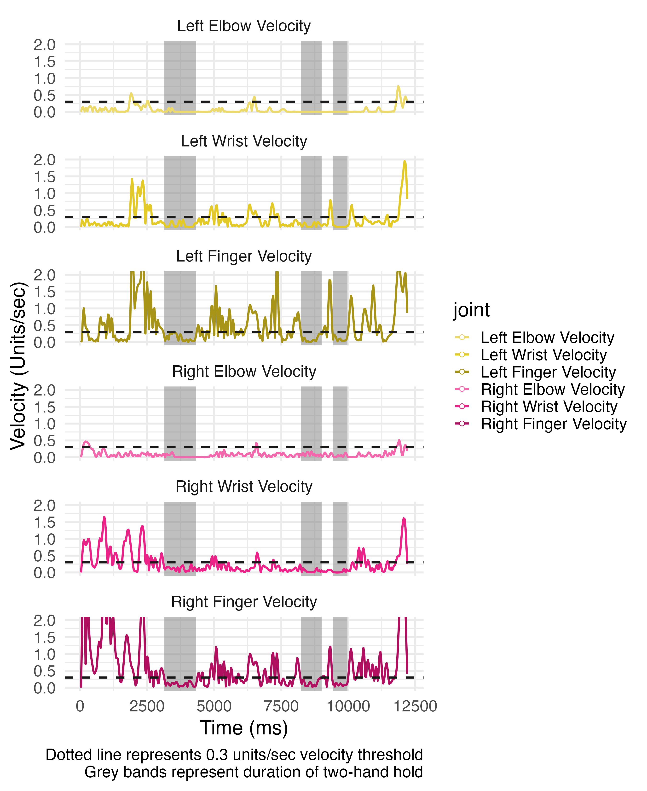
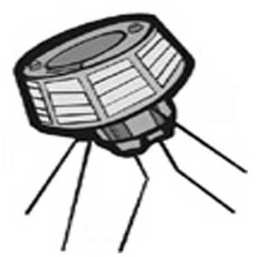
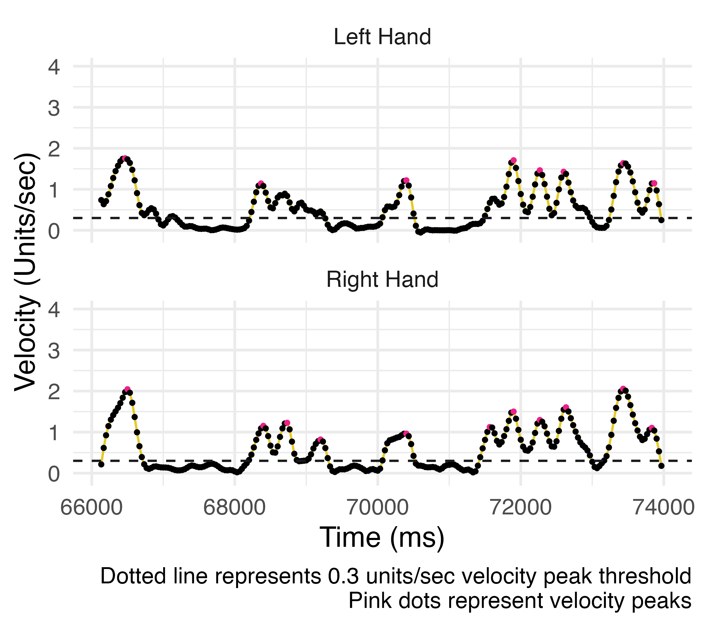
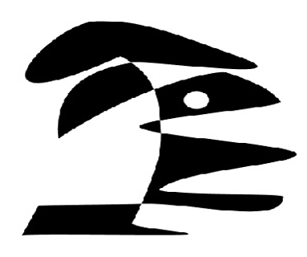
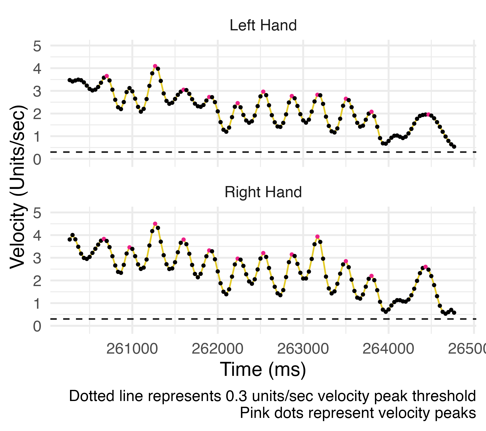

The purpose of this document is to provide definitions, visualizations, and illustrative examples of the kinematic-based gesture measures used in this paper, Multimodal Signals of Multiparty Audience Design in Adults with Moderate-Severe Traumatic Brain Injury: Integrated Findings across Speech, Gesture, and Eye Gaze. The full reproducible code and dataset are available on the OSF project: [Insert link XXXXXXX]
Gesture size is quantified as the 2D surface area of left and right hands during moments of active gesturing for a given referent description. The surface area was calculated using the x and y coordinate values of the left and right hands separately. These surface areas were added together and any overlapped area subtracted to calculate the unique surface area the two hands covered together.
1. Setup: creates an empty vector to store the computed
surface area values
2. Iterates over identifying factor variables:
identifies gesture data for unique combinations of participant, round,
and the referent the participant was describing for a given trial
3. Bounding boxes for gestures: identifies the minimum
x and y values of the left and right hand during a given
participant-round-referent combination
4. Area calculation: calculates the rectangular area
covered by the left and right hand separately
5. Overlap correction: calculates any area of overlap
between the left and right hand so it is not counted twice
6. Final surface area: calculates the unique surface
area the hands covered for a given referent description as the sum of
the left an right hand areas minus any area of overlap
7. Store results: assigns the surface area value to all
rows of the dataset corresponding to that participant-round-referent
combination, then returns the updated dataframe with a new column called
surface_area
# function to calculate 2D surface area of gestures produced for each referent description
calc_surface_area <- function(df) {
# Initialize empty vector to store calculated sizes
surface_area <- numeric(nrow(df))
# Loop through unique combinations of participant, round, and referent
unique_combinations <- unique(df[, c("SubjectID", "round", "GU_referent")])
for (i in 1:nrow(unique_combinations)) {
subject_id <- unique_combinations[[i, "SubjectID"]]
Referent <- unique_combinations[[i, "GU_referent"]]
Round <- unique_combinations[[i, "round"]]
# Subset for current participant, round, and referent
ges_df <- df[df$SubjectID == subject_id & df$GU_referent == Referent & df$round == Round, ]
# Bounding box for left hand
x_min_left <- min(ges_df$x_LWrist_SN)
x_max_left <- max(ges_df$x_LWrist_SN)
y_min_left <- min(ges_df$y_LWrist_SN)
y_max_left <- max(ges_df$y_LWrist_SN)
# Bounding box for right hand
x_min_right <- min(ges_df$x_RWrist_SN)
x_max_right <- max(ges_df$x_RWrist_SN)
y_min_right <- min(ges_df$y_RWrist_SN)
y_max_right <- max(ges_df$y_RWrist_SN)
# Area of each
area_left <- (x_max_left - x_min_left) * (y_max_left - y_min_left)
area_right <- (x_max_right - x_min_right) * (y_max_right - y_min_right)
# Calculate any area of overlap between the left and right hand areas
# Calculate overlap bounds
x_overlap_min <- max(x_min_left, x_min_right)
x_overlap_max <- min(x_max_left, x_max_right)
y_overlap_min <- max(y_min_left, y_min_right)
y_overlap_max <- min(y_max_left, y_max_right)
# Compute overlap area (if valid)
overlap_area <- 0
if (x_overlap_max > x_overlap_min && y_overlap_max > y_overlap_min) {
overlap_area <- (x_overlap_max - x_overlap_min) * (y_overlap_max - y_overlap_min)
}
# Unique surface area
total_area <- area_left + area_right - overlap_area
# Store result for all rows matching this referent
surface_area[df$SubjectID == subject_id & df$GU_referent == Referent & df$round == Round] <- total_area
}
# Add column to df
df$surface_area <- surface_area
return(df)
}

Videos of participants were masked to protect participant anonymity using the following code: Pouw, W., & Akamine, S. (2025). Using Media-Pipe for full-body tracking, masking, blurring, and movement tracing. Retrieved from https://github.com/WimPouw/envisionBOX_modulesWP/tree/main/Mediapipe_Optional_Masking
| Calculated Gesture Area = 3.0 units2 | Original Referent Description |
|---|---|
 |
| Calculated Gesture Area = 2.0 units2 | Original Referent Description |
|---|---|
 |
Gesture holds were identified using motion tracking key points of the right and left wrists, index fingers, and elbows. Gesture holds were considered any consecutive 9 or more frames (i.e., >= 300ms) in which the velocity of both wrists, index fingers, and elbows does not exceed 0.3 units per second in normalized coordinate space.
1. Work per participant + gesture unit: Groups the data
by unique combinations of participant, set, and gesture unit ID (unique
numeric identifier for each gesture unit) to process each subgroup
separately
2. Compute velocities for each joint: For each frame,
the function calculate_distance() calculates how fast the left
and right wrists, elbows, and index fingers are moving in 2D space.
Velocity is based on frame-to-frame displacement multiplied by frames
per second
3. Detect holds for each joint: A joint is considered
held if its velocity is below the specified threshold (0.3 units/sec).
Short holds are discarded unless they are at least min_len
frames long (i.e., 9 frames, \(\ge\)
300 ms)
4. Combine holds into hand-level holds: A hand is
considered held if all three joints (elbow, wrist, index finger) are
held for at least min_len (i.e., 9) frames. Calculated
separately for left and right hands.
5. Find two-hand holds: Both hands are considered held
if both the left and right hands are held for at least min_len
(i.e., 9) frames. If the gap between two holds is very small (\(\le\) max_gap_hold_both, default =
2 frames), the two hold runs are merged so they count as one continuous
hold
6. Label each hold with a unique ID number: Every
distinct two-hand hold that was detected gets assigned a unique
numerical ID
7. Store results: For each frame, the function adds
observations to the following columns: hold_right (1 if right
hand is holding, else 0), hold_left (1 if left hand is holding,
else 0), hold_both (1 if both hands are holding, else 0),
hold_ID (identifier of current two-hand hold, 0 if none)
calc_holds <- function(df, FPS = 30,
threshold = 0.3, # joint must be moving slower than .3 units/sec
max_gap_hold_both = 2, # merge tolerance for both-hands holds
min_len = 9) # a hold must be at least 9 frames long (i.e., >= 300 ms)
{
process_group <- function(df_group) {
n <- nrow(df_group)
# 1) Calculate velocities for all joints
joints <- list(
RH = calculate_distance(df_group$x_RWrist_SN, df_group$y_RWrist_SN, FPS),
RE = calculate_distance(df_group$x_RElbow_SN, df_group$y_RElbow_SN, FPS),
RFin = calculate_distance(df_group$x_RIndexFinger_SN, df_group$y_RIndexFinger_SN, FPS),
LH = calculate_distance(df_group$x_LWrist_SN, df_group$y_LWrist_SN, FPS),
LE = calculate_distance(df_group$x_LElbow_SN, df_group$y_LElbow_SN, FPS),
LFin = calculate_distance(df_group$x_LIndexFinger_SN, df_group$y_LIndexFinger_SN, FPS)
)
# Add velocity column for each joint
for (nm in names(joints)) {
df_group[[paste0(nm, "_velocity")]] <- joints[[nm]]
}
# Identify pauses for each joint (speed < threshold), then keep only pause runs with length >= min_len
joint_vecs <- lapply(joints, function(vel) {
v <- as.integer(vel < threshold)
v <- filter_min_length(v, min_len)
v
})
# Combine joints per hand
hold_right <- as.integer(joint_vecs$RH & joint_vecs$RE & joint_vecs$RFin)
hold_left <- as.integer(joint_vecs$LH & joint_vecs$LE & joint_vecs$LFin)
# Filter for runs where all three joints are held at least min_len frames per hand
hold_right <- filter_min_length(hold_right, min_len)
hold_left <- filter_min_length(hold_left, min_len)
# Identify frames where both hands are holding
# Merge hold runs if they are separated by <= max_gap_hold_both frames
hold_both <- as.integer(hold_right & hold_left)
hold_both <- merge_small_gaps(hold_both, max_gap_hold_both)
hold_both <- filter_min_length(hold_both, min_len)
# Assign hold IDs
hold_ID <- integer(n)
rle_both <- rle(hold_both)
id <- 0
idx <- 1
for (i in seq_along(rle_both$values)) {
if (rle_both$values[i] == 1) {
id <- id + 1
hold_ID[idx:(idx + rle_both$lengths[i] - 1)] <- id
}
idx <- idx + rle_both$lengths[i]
}
# Add columns to df_group
df_group$hold_right <- hold_right
df_group$hold_left <- hold_left
df_group$hold_both <- hold_both
df_group$hold_ID <- hold_ID
df_group
}
df %>%
group_by(SubjectID, GU_set, GU_ID) %>%
group_modify(~ process_group(.x)) %>%
ungroup()
}

| Three Gesture Holds Identified | Original Referent Description |
|---|---|
 |
The number of gesture submovements participants produced during a referent description was calculated as the total number of velocity peaks summed across left and right hands. If velocity peaks occurred synchronously in the left and right hands (i.e, hands moved in unison), these movements were considered a single submovement. Peak velocities needed to be at least 0.3 units/sec, have a prominence of 0.25 (rise at least 0.25 units above the highest valley on either side), and be at least 9 frame (\(\ge\) 300ms) away from the nearest neighboring peak.
get_peaks() Function for
identifying velocity peaks:
1. Compute hand
velocities: Calculates the velocity of each hand by computing
the frame-to-frame displacement of the x and y coordinates of the wrist
multiplied by frames per second.
2. Smooth the velocity
signals: Uses a Savitzky-Golay filter to smooth the velocity to
detect meaningful peaks in the movement signal, rather than random
jitter.
3. Detect velocity peaks: Identifies frames
where the hand is moving particularly fast, based on the following
criteria: minimum speed (height_thresh), minimum distance from
other peaks (distance_frames), minimum prominence compared to
neighboring valleys (prominence_thresh).
4. Store
peak results in data: Return results as a binary variable where
1 indicates the location of a peak (otherwise 0) separately for left and
right hand.
# Main function to process a single gesture unit (df_group) to find left/right wrist velocity peaks
get_peaks <- function(df_group,
FPS = 30, # Frames per second of motion capture
smooth_window = 15, # Window length for Savitzky–Golay smoothing (must be odd)
smooth_order = 5, # Polynomial order for Savitzky–Golay smoothing
height_thresh = .3, # velocity must be at least 0.3 units/sec to count as a "peak"
prominence_thresh = .25, # a peak must rise at least 0.25 units above the highest valley on either side
distance_frames = 9) { # a peak must be at least 9 frames away (i.e., 300 msec) from another peak
# Helper to ensure smoothing parameters are valid for the data length for sgolayfilt
adjust_window_order <- function(len, desired_win, desired_order) {
n <- if (len >= desired_win) {
desired_win
} else {
w <- ifelse(len %% 2 == 0, len - 1, len) # ensure odd
max(w, 3) # at least 3
}
p <- min(desired_order, n - 1)
list(window = n, order = p)
}
# compute velocity for each wrist
LH_vel <- calculate_displacement(df_group$x_LWrist_SN, df_group$y_LWrist_SN, FPS)
RH_vel <- calculate_displacement(df_group$x_RWrist_SN, df_group$y_RWrist_SN, FPS)
# Adjust smoothing parameters if signal length < desired window
LH_params <- adjust_window_order(length(LH_vel), smooth_window, smooth_order)
RH_params <- adjust_window_order(length(RH_vel), smooth_window, smooth_order)
# Smooth velocity curves with Savitzky–Golay filter
LH_smooth <- sgolayfilt(LH_vel, p = LH_params$order, n = LH_params$window)
RH_smooth <- sgolayfilt(RH_vel, p = RH_params$order, n = RH_params$window)
# Detect velocity peaks
LH_peaks_mat <- findpeaks(LH_smooth,
minpeakheight = height_thresh,
minpeakdistance = distance_frames,
threshold = prominence_thresh)
RH_peaks_mat <- findpeaks(RH_smooth,
minpeakheight = height_thresh,
minpeakdistance = distance_frames,
threshold = prominence_thresh)
# Create binary peak indicator vectors
L_peak_vec <- integer(length(LH_smooth))
R_peak_vec <- integer(length(RH_smooth))
if (!is.null(LH_peaks_mat)) {
peak_indices_L <- LH_peaks_mat[,2] # index column from findpeaks()
L_peak_vec[peak_indices_L] <- 1L
}
if (!is.null(RH_peaks_mat)) {
peak_indices_R <- RH_peaks_mat[,2]
R_peak_vec[peak_indices_R] <- 1L
}
# Pad smoothed velocities and peaks to match df_group length
# Velocity vectors are n-1 in length → append NA (for velocity) or 0 (for peaks)
LH_smooth_full <- c(LH_smooth, NA_real_)
RH_smooth_full <- c(RH_smooth, NA_real_)
L_peak_full <- c(L_peak_vec, 0L)
R_peak_full <- c(R_peak_vec, 0L)
# Add results to data frame
df_group <- df_group %>%
mutate(
LH_smooth_vel = LH_smooth_full,
RH_smooth_vel = RH_smooth_full,
L_peak = L_peak_full,
R_peak = R_peak_full
)
return(df_group)
}
# Counts the number of unique submovements across both hands
# A "submovement" is identified by peaks in left/right hand velocity signals.
# Peaks from the left and right hand are considered part of the **same** submovement if they occur within `distance_thresh` frames of each other.
count_submoves <- function(L_peak_vec, # Binary vector (1 = left-hand peak at that frame, 0 otherwise)
R_peak_vec, # Binary vector (1 = right-hand peak at that frame, 0 otherwise)
distance_thresh = 2 # Maximum frame gap between L/R peaks to consider them the same submovement
) {
# Find frame indices where each hand has a peak
L_peaks_idx <- which(L_peak_vec == 1)
R_peaks_idx <- which(R_peak_vec == 1)
# Handle edge cases where one hand has no peaks
if (length(L_peaks_idx) == 0) return(length(R_peaks_idx))
if (length(R_peaks_idx) == 0) return(length(L_peaks_idx))
# Combine peak indices into one table
all_peaks <- data.frame(
idx = c(L_peaks_idx, R_peaks_idx),
hand = c(rep("L", length(L_peaks_idx)), rep("R", length(R_peaks_idx)))
) %>% arrange(idx)
# Start with total peaks across both hands
total_peaks <- nrow(all_peaks)
# Find pairs of L and R peaks that are within distance_thresh frames
# Each right-hand peak can only be matched once
overlaps <- 0
used_r <- rep(FALSE, length(R_peaks_idx)) # track matched right-hand peaks
for (l_idx in L_peaks_idx) {
close_r <- which(abs(R_peaks_idx - l_idx) <= distance_thresh & !used_r)
# Right-hand peaks close enough and not already matched
if (length(close_r) > 0) {
# Count the closest unmatched R peak as an overlap
used_r[close_r[1]] <- TRUE
overlaps <- overlaps + 1
}
}
# subtract overlapping peaks from the total_peaks count to get only unique peaks produced by one or both hands
dedup_total <- total_peaks - overlaps
# Returns count of unique submovements across both hands (deduplicated for overlaps)
return(dedup_total)
}

| Submovement Velocity Plot | Original Referent Description |
|---|---|
 |

| Submovement Velocity Plot | Original Referent Description |
|---|---|
 |